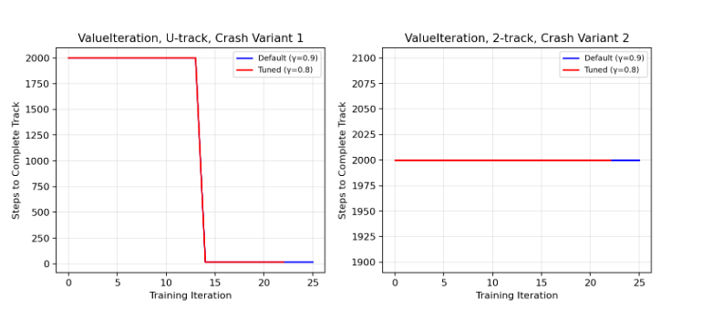
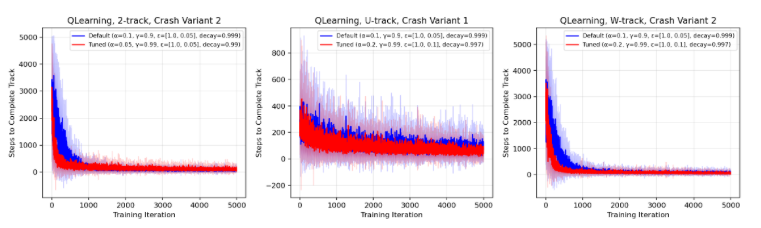
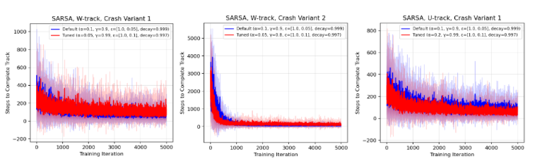
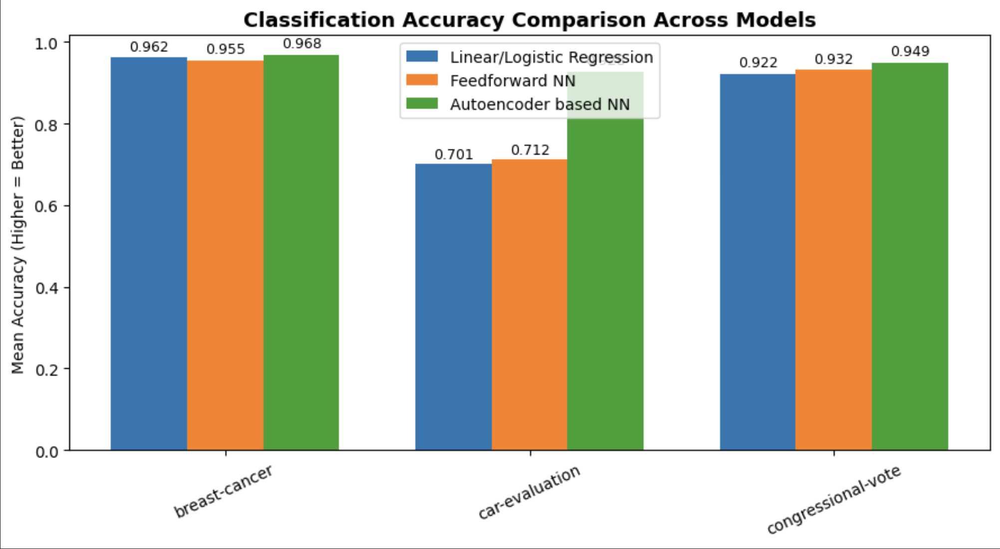
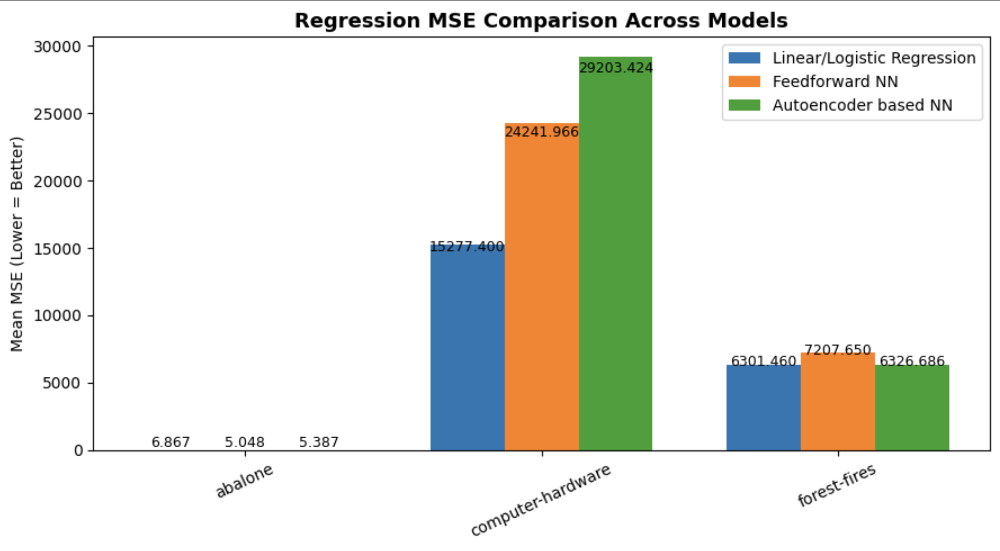
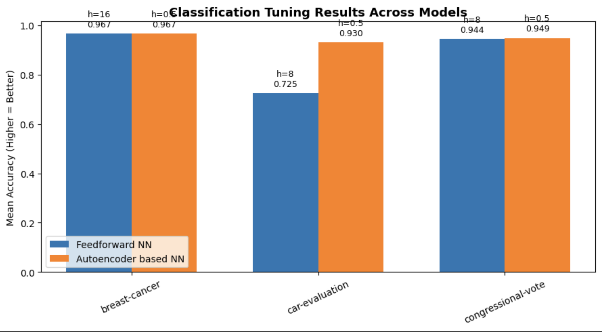
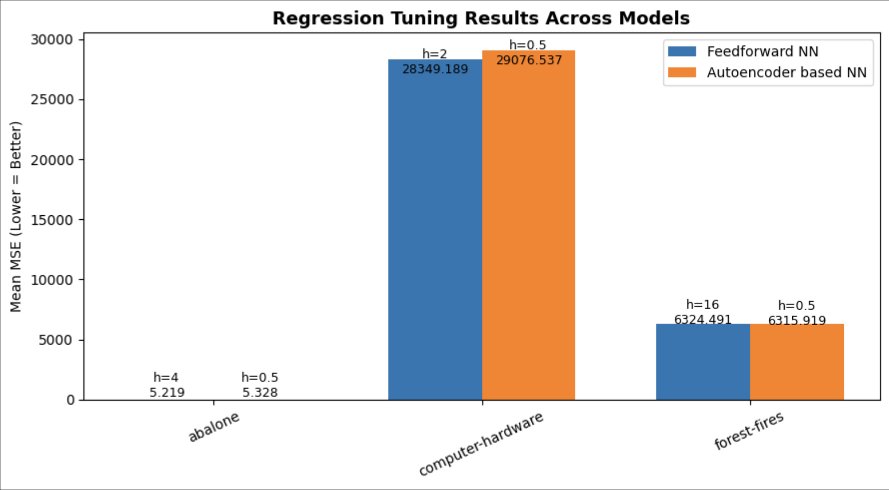

Research Projects
Comparative analysis of Value Iteration, Q-learning, and SARSA in a racing simulator with nondeterministic transitions and crash handling variants.
Abstract
This paper evaluates the performance of three reinforcement learning approaches: Value Iteration, Q-learning, and SARSA. Experiments are performed on a racetrack navigation problem involving discrete state dynamics, acceleration constraints, and two crash handling variants. The results show that Value Iteration converges reliably but is highly sensitive to track dimensions. Q-learning and SARSA demonstrate faster adaptation and increased robustness to transitions, with tuned parameters providing improvements in most settings. These findings demonstrate the trade-offs between model-based and model-free methods for reinforcement learning in uncertain, unpredictable environments.
Problem Statement
The racetrack navigation problem presents a simplified environment where an agent must learn to drive from a start cell to a finish cell while avoiding collisions with track boundaries. This task demonstrates real-world challenges found in autonomy problems, including:
- Nondeterministic transitions (20% chance of acceleration failure)
- Two crash handling variants: reset to nearest safe cell vs. return to starting line
- Exploration-exploitation tradeoffs
- Impact of safety failures on learning stability
Methodology
Three algorithms were evaluated on three racing tracks (2-track, U-track, W-track) with varying complexity:
- Value Iteration: Model-based method using full knowledge of transition model
- Q-learning: Model-free, off-policy method with epsilon-greedy exploration
- SARSA: Model-free, on-policy method with epsilon-greedy exploration
Each algorithm was tested with both default and tuned hyperparameters. Tuning involved grid search over learning rates, discount factors, and exploration schedules. Performance was measured by steps to completion, with 10 independent rollouts per configuration.
Key Results
Value Iteration Performance
Value Iteration exhibited deterministic convergence behavior. On the U-track with crash variant 1 (left), it showed characteristic delayed convergence with a sharp drop from 2000 steps to near-zero around iteration 14. On simpler tracks like the 2-track (right), convergence occurred only at the final iteration, demonstrating sensitivity to track geometry.
Q-learning Performance
Q-learning demonstrated rapid improvement on simpler tracks (2-track, left) with tuned parameters converging by iteration 800. On more complex tracks (U-track middle, W-track right), learning was noisier but tuned parameters consistently reduced variance and accelerated convergence. The W-track showed the most significant improvement from tuning due to its multiple turning options.
SARSA Performance
SARSA exhibited more conservative learning behavior as an on-policy algorithm. Across all tracks (W-track left and middle, U-track right), SARSA showed higher variance compared to Q-learning, particularly under crash variant 1. This is because SARSA updates values based on actions actually taken, making it more sensitive to crash-induced unexpected transitions. Tuned parameters provided consistent improvements but with smaller magnitude than Q-learning.
Key Findings
- Value Iteration: Converged reliably but showed high sensitivity to track dimensions and offered limited insight during training
- Q-learning: Demonstrated fastest improvement from hyperparameter tuning and best overall convergence speed, though sensitive to crash-induced nondeterminism
- SARSA: Learned more cautiously as an on-policy method, showing greater variance especially when crash resets introduced unpredictable transitions
- Crash Variants: Crash variant 1 (reset to nearest safe cell) consistently introduced higher variance and slower convergence compared to variant 2 (return to start)
- Hyperparameter Tuning: Substantially improved model-free algorithms' performance and stability across most settings
Conclusion
This research demonstrates that environments with safety constraints can significantly disrupt learning, and careful parameter tuning can considerably improve performance. Model-based methods like Value Iteration benefit from complete transition knowledge but lack informativeness during training. Model-free methods show superior adaptability but require careful hyperparameter optimization to handle nondeterministic transitions effectively.
Comparative study of autoencoder-based networks versus traditional models across classification and regression tasks with systematic hyperparameter tuning.
Abstract
This report evaluates linear and logistic regression networks, a two-layer feedforward neural network, and an autoencoder-based neural network across three classification and three regression datasets using 5×2 cross-validation. Results showed that autoencoder-based networks achieved the highest or comparable accuracy on all classification datasets, with tuning confirming their stability and advantage on nonlinear, categorical data. In contrast, linear regression consistently showed the lowest mean squared error on most regression tasks. Overall, tuning improved stability but did not change fundamental trends—autoencoder pretraining improved feature representation for classification, while linear models remained most effective for regression.
Problem Statement
This study investigates whether unsupervised pretraining through autoencoders improves the predictive performance of neural networks compared to traditional regression models and standard feedforward networks. While autoencoders are designed to learn compressed representations of input data, this research examines whether these representations improve prediction accuracy or generalization when used as the first hidden layer in a feedforward network.
Methodology
Four model architectures were implemented from scratch and evaluated:
- Linear/Logistic Regression: Baseline models for regression and classification tasks
- Two-Layer Feedforward Network: Standard neural network with backpropagation
- Autoencoder-Based Network: Network using unsupervised pretraining followed by supervised learning
Models were evaluated on six datasets using 5×2 cross-validation:
- Classification: breast-cancer, car-evaluation, congressional-vote
- Regression: abalone, computer-hardware, forest-fires
Systematic hyperparameter tuning examined hidden layer sizes and autoencoder encoding fractions to identify optimal configurations.
Key Results
Classification Performance (Before Tuning)
Across classification tasks, the autoencoder-based network consistently achieved the highest or comparable accuracy. On breast-cancer, all models performed similarly (~0.95-0.97 accuracy) due to low dataset complexity. On car-evaluation, the autoencoder showed dramatic improvement (0.93 accuracy) compared to logistic regression and feedforward networks, effectively capturing nonlinear categorical relationships. On congressional-vote, the autoencoder slightly outperformed other models (0.95 vs. 0.93 and 0.92).
Regression Performance (Before Tuning)
For regression tasks, linear regression remained most effective on 2 of 3 datasets. On abalone, neural models showed slight improvement (MSE ~5.3 vs. 6.9 for linear regression), demonstrating some benefit from nonlinear modeling. On computer-hardware, neural models struggled significantly (MSE ~28,000-29,000 vs. 15,000 for linear regression), suggesting convergence difficulties or data/scale incompatibility. On forest-fires, all models performed similarly (MSE ~6,300), indicating dataset complexity limited further gains.
Classification Performance (After Tuning)
Hyperparameter tuning of hidden layer sizes and encoding fractions led to slightly higher accuracies for classification tasks. The autoencoder retained its advantage on complex, multiclass datasets like car-evaluation. Tuning primarily improved stability across cross-validation folds rather than dramatically changing performance.
Regression Performance (After Tuning)
For regression tasks, tuning produced negligible changes in performance. Network depth and encoding dimensionality had limited influence on regression accuracy. Linear regression continued to outperform neural models, confirming that the autoencoder's loss function (prioritizing input variance preservation) may miss features important for numeric target prediction.
Key Findings
- Classification Tasks: Autoencoder pretraining significantly improved accuracy on datasets with nonlinear or categorical features, particularly car-evaluation (0.72 → 0.93 accuracy)
- Regression Tasks: Linear regression consistently achieved lowest MSE, with neural models showing limited benefit despite added complexity
- Dataset Complexity: Simpler datasets (breast-cancer, forest-fires) showed similar performance across all models, indicating diminishing returns from deeper architectures
- Hyperparameter Tuning: Improved convergence stability and consistency but did not fundamentally alter performance trends
- Feature Representation: Autoencoder's unsupervised objective function excels at feature abstraction for classification but may miss variance correlated with regression targets
Conclusion
This study demonstrates that neural network performance is highly data-dependent. Autoencoder pretraining offers significant advantages when feature abstraction and separability are important (classification tasks with nonlinear relationships), while linear models remain superior for datasets with predominantly linear relationships (regression tasks). The compatibility between a model's objective function and the data's underlying structure is more important than architectural complexity. Autoencoder-based networks provide excellent feature representation for classification, while standard linear regression approaches maintain strong performance for numeric prediction tasks.